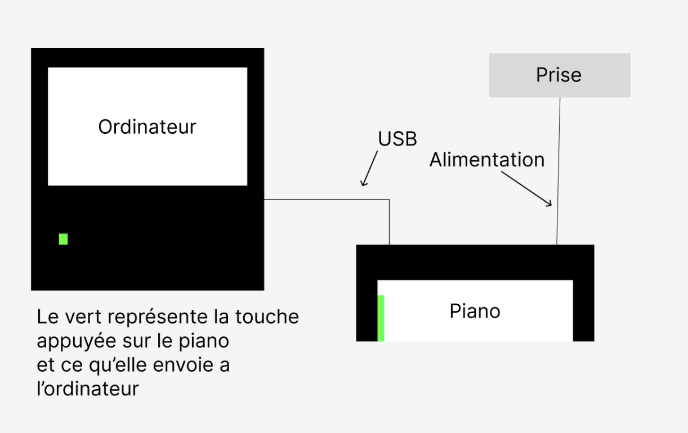

PianoTyper
Le PianoTyper est un piano connecté à un ordinateur qui permet d’utiliser le piano comme remplacement du clavier de base d’un ordinateur ou d’un portable. Ce système est une bonne base pour permettre à quelqu'un de créer un jeu qui permet d’apprendre le piano, ou simplement s’amuser en essayant un clavier sympathique.
Description de l’objet
Le piano normalement permet de jouer du piano avec différent type de piano avec la possibilité de brancher des écouteurs pour ne pas déranger les alentours, mais nous avons pris l’avantage du port USB pour cette expérimentation. Le fabricant du piano est Casio.
Schéma Matérielle :

Expérimentation
L'expérimentation du piano aurait pu avoir plus de bloquant, mais contre toute attente tout s'est bien passé. Les 3 expérimentations principales étaient de vérifier que le piano était bien fonctionnel, vérifier que le piano arrive bien a envoyer un input à l'ordinateur portable et que l’ordinateur puisse convertir l'input du piano en input de touche du clavier.
L'expérimentation 1 avait pour objectif de vérifier que le piano était fonctionnel, pour cela j’ai brancher le fil d’alimentation du piano dans une prise, j’ai allumé celui-ci et j’ai commencé à tester les touches. Le résultat de cette expérimentation était concluant!
L'expérimentation 2 avait pour objectif de vérifier que le piano envoyait un input valide à l'ordinateur portable, pour cela j’ai branché un fil usb de mon ordinateur au piano et j’ai codé un petit script piano qui permet de lire l'input d’un appareil. Le résultat de cette expérimentation était concluant!
L'expérimentation 3 avait pour but de convertir l'input du piano que nous savions était fonctionnel en touche du clavier habituel, pour cette partie de l'expérimentation j’ai modifier mon script python qui permet de lire l’input en ajoutant des cas comme si cette touche est appuyée envoie cela comme touche. Le résultat de cette expérimentation était également concluant, tout fonctionnait!
Avis
Sachant que le piano est déjà assez ancien, alors ne reçoit pas de nouvelle mise a jour je qualifierais la longévité de l'expérimentation de très longue soit jusqu'à ce que le piano rendre l'âme. Pour la stabilité, l’avis est le même que la longévité sauf à un détail près. Le script pourrait avoir des modifications dans la librairie et faire en sorte que ce soit obsolète, mais avec quelques modifications il pourrait être remis sur pied facilement. Pour l'efficacité, l'expérience est fonctionnelle et permet de faire plusieurs activités et tests amusants, alors elle est bien efficace. La maintenance est à peu près nulle sauf niveau code, si il y a quelques changements niveaux librairie ou python des modifications peuvent être nécessaire, mais elle ne devrait pas arriver rapidement. La robustesse à la manipulation est assez grande, le piano est assez robuste, sauf l’ordinateur qui ne doit pas tomber par terre.
La technologie a un grand potentiel pour l’enseignement de la musique d'une facon originale, car plusieurs sites donnent des conseils pour apprendre mais ceux-ci ne sont pas trop à la mode d'aujourd'hui comme Roland apprendre le piano sur internet. Cette expérience renouvelle ce besoin grâce a la possibilité de créer des jeux musicales interactifs et également elle permet de s’amuser en utilisant un clavier différent. L’avantage principal est que vous pouvez toujours utiliser le piano pour jouer normalement et faire des jeux interactifs, alors que si vous preniez le clavier habituel alors le réalisme de l’apprentissage ne serait pas autant élevée. Comme désavantage, un clavier normal coûte beaucoup moins cher que un piano électrique nous pouvons examiner cela sur le site de Casio notre modèle de piano coûte environ 200$CAD, alors cela est un désavantage important surtout pour un débutant. Pour mon avis final, je crois que l'expérience s'est très bien déroulée et que celle-ci a un énorme potentiel pour l’apprentissage de la musique interactivement.
Source : https://www.roland.com/fr/apprendre-piano/guide-apprendre-piano-en-ligne/
Source2 : https://www.casio.com/ca-en/electronic-musical-instruments/product.CT-S200BK/